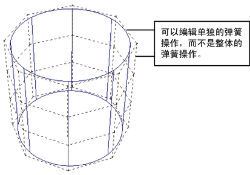

如果在弹簧对象中启用“逐弹簧刚度”(Per-spring Stiffness)、“逐弹簧阻尼”(Per-spring Damping)或“逐弹簧静止长度”(Per-spring Rest Length)，则可以编辑各个弹簧的刚度、阻尼和静止长度。

注：
您可以向粒子添加每粒子属性，但不需要添加逐弹簧属性。“逐弹簧刚度”(Per-spring Stiffness)、“逐弹簧阻尼”(Per-spring Damping)或“逐弹簧静止长度”(Per-spring Rest Length)是内置的，您只能对其进行编辑。
编辑逐弹簧属性
- 选择弹簧对象。
- 单击
 （“按组件类型选择”(Select by Component Type)图标），然后限制选择弹簧。
（“按组件类型选择”(Select by Component Type)图标），然后限制选择弹簧。 - 选择包含要更改的属性值的各个弹簧。
- 选择“窗口 > 常规编辑器 > 组件编辑器”(Windows > General Editors > Component Editor)。
“组件编辑器”(Component Editor)的“弹簧”选项卡显示选定弹簧的静止长度值、刚度值和阻尼值。属性名称以 PS 结尾，表示可以逐弹簧设定这些属性。
- 为所需的弹簧设定新值。
请参见组件编辑器。